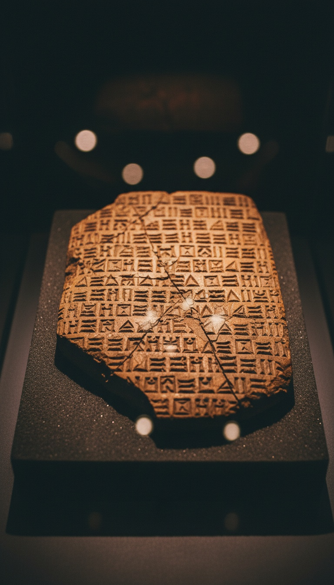

The most quoted line of the crucifixion was not composed in grief. It was inherited from a Babylonian temple liturgy sung to Marduk a thousand years before David was born.
"My God, my God, why have you forsaken me" is not a private agony. It is a fixed opening formula from a Sumerian and Akkadian genre called the ershemma, and the cuneiform tablets that preserve it are sitting in the British Museum right now.

The Formula Was Fixed Before Hebrew Existed as a Written Language
The ershemma is a Mesopotamian mournful song genre, performed by gala priests in temple liturgy, with a rigid opening structure: "Lord, why have you forsaken your city, your servant, your house." The earliest tablets date to roughly 1800 BCE, with the genre traceable into the Ur III period before that.
Mark E. Cohen cataloged the entire corpus in his 1988 two-volume reference work, The Canonical Lamentations of Ancient Mesopotamia, published by Capital Decisions Limited in Potomac, Maryland. The book is not fringe. It is the standard scholarly reference for the genre.
Cohen's catalog draws on tablets excavated from three primary sites: Nippur in central Iraq, Sippar near modern Baghdad, and Babylon itself. The cuneiform records preserve hundreds of these laments addressed to Marduk, Enlil, Inanna, and Ningirsu, all using the same forsakenness formula.
The Tablets Are in London, Not Hidden
The British Museum holds the core textual witnesses in its Cuneiform Texts series. CT 15 and CT 16-17, published between 1902 and 1903 under E. A. Wallis Budge's curatorship, contain the Marduk and Enlil lament tablets that exhibit the closest parallels to Psalm 22's opening cry.
The Nippur tablets specifically were excavated by the University of Pennsylvania expeditions between 1889 and 1900, with duplicates split between the British Museum, the Penn Museum in Philadelphia, and the Istanbul Archaeological Museums. The phrasing is consistent across all three collections.
The Sippar archive, recovered largely through Hormuzd Rassam's 1881 excavations for the British Museum, includes balag and ershemma tablets that name the forsaken city, the absent god, and the cry of the abandoned servant in nearly the exact tricolon structure Psalm 22 deploys.
586 BCE: The Transmission Window Opens
Nebuchadnezzar II destroys Jerusalem in 586 BCE. The temple burns. The priestly class, the literate scribal elite, the people who would later edit and canonize the Psalms, are deported to Babylon.
They live there for roughly fifty years, inside the active liturgical culture that performed ershemma laments in the temples of Marduk at Esagila. The Babylonian Chronicles, ABC 5 in the British Museum collection, document the deportation. The biblical Book of Lamentations, composed in this period, already shows the genre's structural fingerprints.
Cyrus the Great issues the return decree in 538 BCE, recorded on the Cyrus Cylinder, BM 90920, also in the British Museum. The returning Judean priests bring back more than permission. They bring the formula.
The dying god's cry that Christians recite at Easter was originally addressed to Marduk in Babylon a thousand years before David ruled.
Psalm 22 Is a Post-Exilic Composition
The traditional Davidic attribution puts Psalm 22 around 1000 BCE. The linguistic evidence does not support that date. The Hebrew shows Late Biblical features, Aramaic loanwords, and theological vocabulary consistent with a sixth or fifth century BCE composition, well after the exile.
Scholars including Frank-Lothar Hossfeld and Erich Zenger, in their three-volume Psalms commentary published by Fortress Press between 2005 and 2011, place the final redaction of Psalm 22 firmly in the post-exilic period. The superscription "of David" is a liturgical genre marker, not an authorship claim.
This matters because the timeline collapses cleanly. The ershemma genre flourishes from 1800 BCE forward. Judean priests encounter it during the exile of 586 to 538 BCE. Psalm 22 is composed or finalized in the decades after the return. The borrowing window is not speculative. It is documentary.
The Gospel Writers Quote a Quote of a Quote
Matthew 27:46 and Mark 15:34 both place Psalm 22:1 in Jesus's mouth at the moment of death. Mark gives the Aramaic transliteration, "Eloi, Eloi, lema sabachthani," which is itself a translation of the Hebrew of Psalm 22, which is itself an echo of the Akkadian and Sumerian ershemma formula.
The Gospel of Mark is dated by most scholars to around 70 CE, written in Greek, quoting an Aramaic version of a Hebrew psalm that inherited a Babylonian liturgical opening. Four languages. Six centuries between the Babylonian originals and the Gospel reuse. The chain of transmission is unbroken and traceable.
The crucifixion scene, in other words, performs an ershemma. The dying figure cries the priestly formula of abandonment. The genre demands it. The genre predates Christianity by more than a millennium and predates Judaism's written canon by centuries.
Why This Was Buried
The Assyriological evidence has been public since the 1880s. Cohen's 1988 catalog has been on academic library shelves for nearly forty years. The British Museum tablets are searchable in the online collection database under accession numbers in the BM 1882-1883 acquisition range.
The Wikipedia article on the ershemma genre was updated within the last five days, an active topic with ongoing scholarly engagement. The parallel to Psalm 22 is not a fringe claim. It is standard comparative Semitics, taught in graduate programs at Chicago's Oriental Institute, Penn, and SOAS in London.
What is missing is the popular admission. The seminary curriculum acknowledges the parallel quietly. The Easter sermon does not. The gap between what the tablets show and what the pulpit says is where the inheritance hides.
The cry on the cross is a quotation. The quotation is a quotation. The original was sung in a temple to a god whose name most Christians have never heard, in a language no one has spoken for two thousand years, by priests whose successors taught the formula to Judean exiles who carried it home in their mouths.
If the most intimate moment of the crucifixion narrative is a recycled Babylonian liturgical opening, what else in the Passion is borrowed? The dying-god motif. The three days. The substitutionary sacrifice. The veil torn at the temple. Start pulling the thread, and tell me where you think it stops.
Before you go
7 books the Vatican doesn't want you reading. Free PDF — the texts they cut, with sources. Joined by 140+ Inner Circle members.
No spam. Unsubscribe anytime.
Go deeper
The Hidden Canon, Vol. I — Enoch. Jubilees. Thomas. Mary. Judas. 90 pages, 14 chapters, every receipt cited. The books your Bible quietly removed.
Read the Canon →Books that informed this investigation
- The Sumerians (Kramer)
- Babylon: Mesopotamia and the Birth of Civilization (Kriwaczek)
- The Ancient Near East (Hallo & Simpson)
As an Amazon Associate, Hidden Epoch earns from qualifying purchases. Cost to you: nothing.
Research safely
The VPN we use to research without being tracked. First 3 months free.
Get NordVPN →